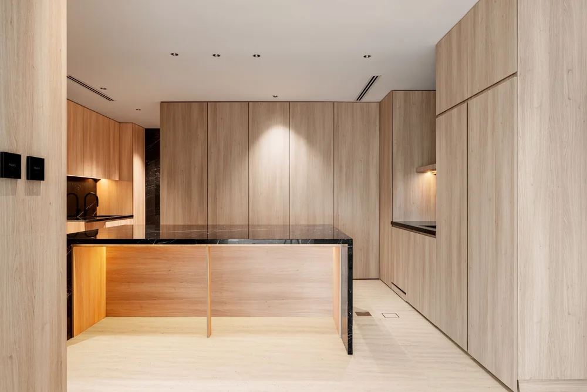
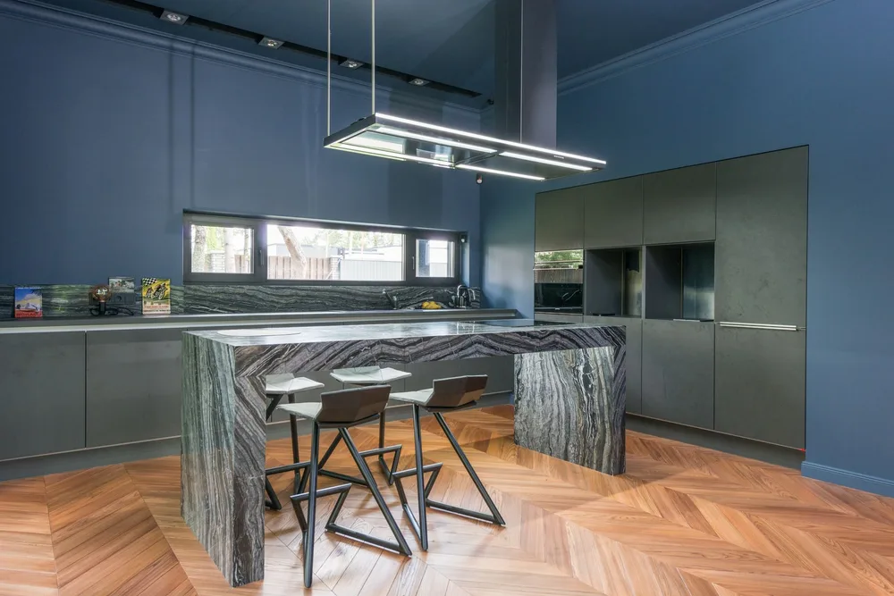
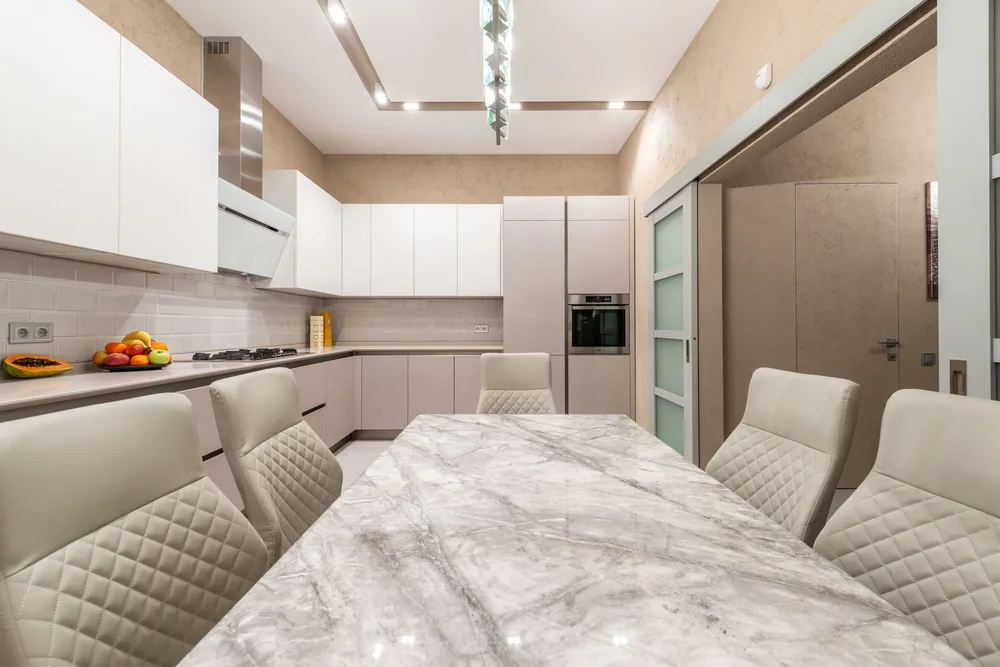
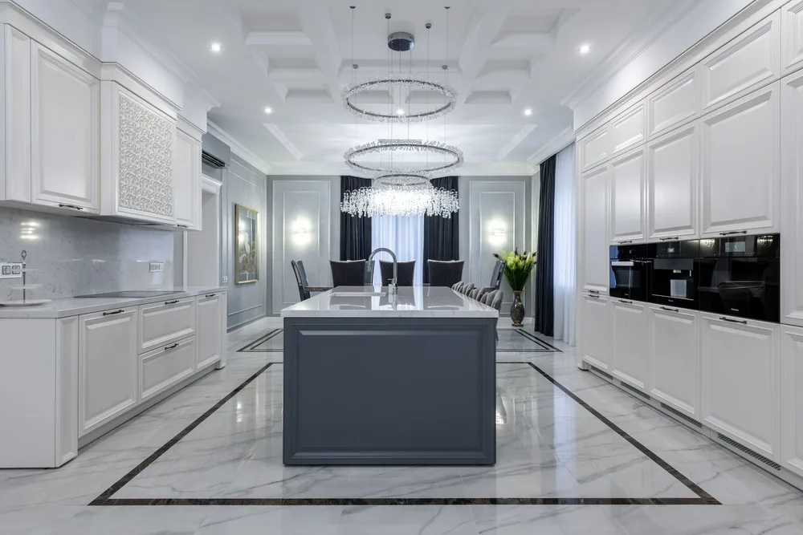
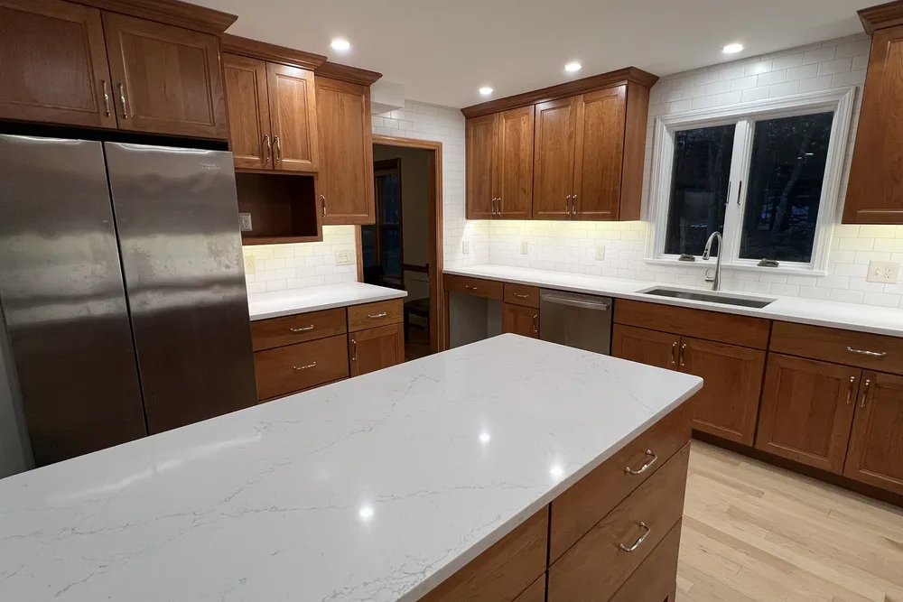
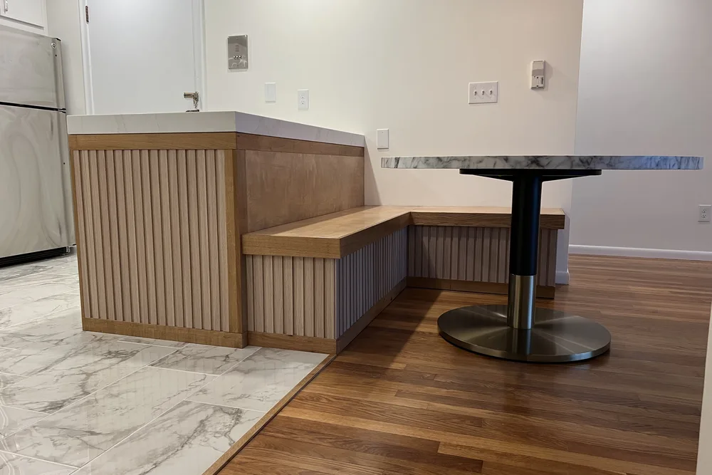
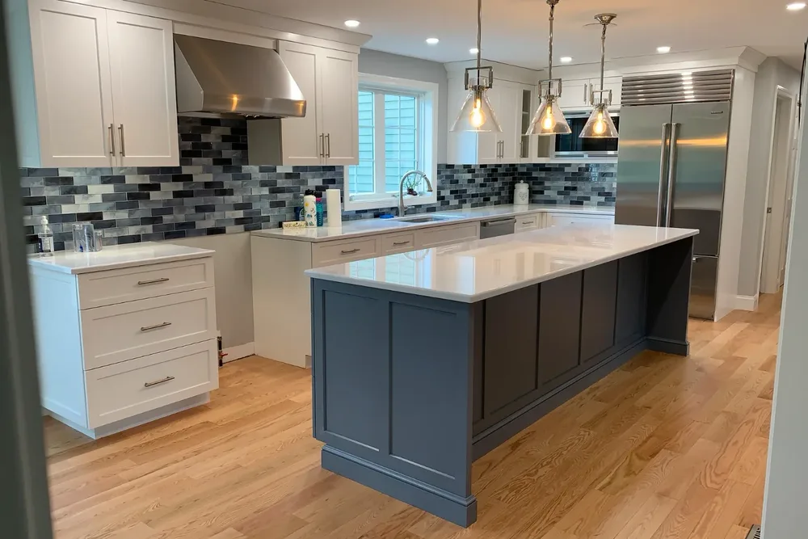
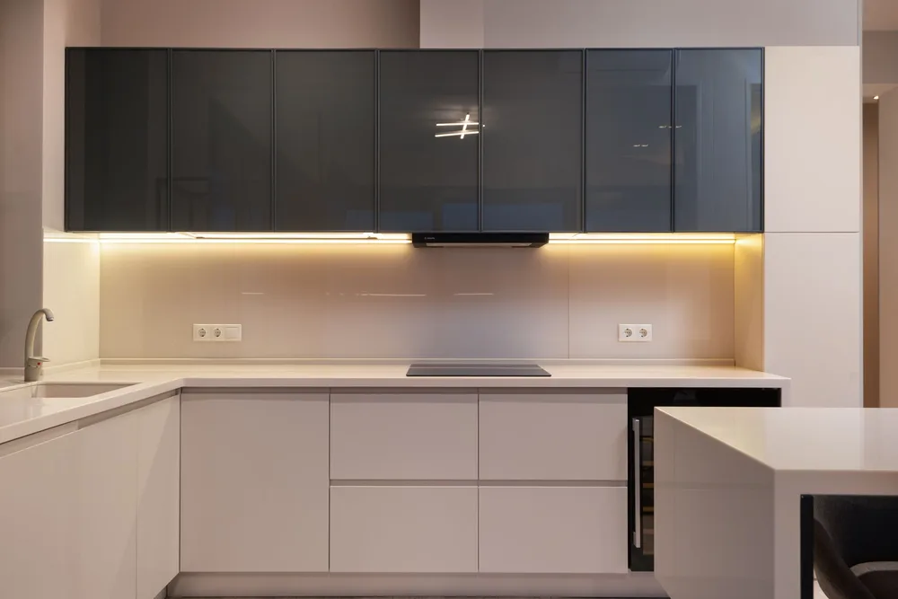

Carlisle, MA kitchen remodeling
Modern kitchen remodeling in Carlisle, MA with clean lines and a layout that works
Modern kitchen remodeling in Carlisle, MA from DeFaria Construction brings clean lines, integrated storage and better light to Carlisle farmhouses and estates, with scope and budget set before demolition.
Local search focus
Carlisle kitchen remodeling starts with the layout, not the catalog.
Across Carlisle Town Center, South Street area, East Street area and West Street area, Carlisle is mostly historic farmhouses and contemporary estates on two-acre wooded parcels along winding country roads. DeFaria Construction starts by separating what the kitchen needs from what it should become, so the budget follows a plan instead of a wish list.
This page is built for Carlisle homeowners comparing kitchen remodeling contractors near them. It connects the Carlisle search to project photos, neighborhoods, the full kitchen scope and a direct estimate path.
- Clear estimate conversations before the project starts.
- Direct communication with the homeowner from walkthrough to final walkthrough.
- Local coverage across Carlisle and the wider Middlesex County area.
Modern kitchens in Carlisle
What a modern kitchen looks like in a Carlisle, MA home

A modern kitchen is less about a trend and more about clean lines and less visual clutter: flat-panel or slim shaker cabinets, quartz or stone counters with simple edges, integrated or panel-ready appliances, hidden storage and layered lighting under cabinets and over the island.
In Carlisle, Massachusetts that style often goes into historic farmhouses or large contemporary homes on wooded lots. In a farmhouse the goal is usually a modern kitchen that still respects beams, wide trim and window placement. In a contemporary estate it is often a bigger island, a pantry wall and a direct line to the patio or yard.
Carlisle homes run on private wells, so many kitchens also need space for water filtration or treatment equipment, planned into the sink base or a nearby cabinet from the start. Electrical service is reviewed early too, since induction cooktops and wall ovens can need upgraded circuits.
- Flat-panel or slim shaker cabinetry with integrated pulls
- Quartz or stone counters and a working island
- Panel-ready appliances and induction-ready electrical
- Room for well water filtration in the cabinet plan
Layouts
Modern kitchen layouts that work in Carlisle homes

The layout matters more than the finish. Most modern kitchens are built around work zones instead of the old triangle alone: a prep zone between the sink and the cooktop, a cooking zone with landing space on both sides, a cleanup zone with the dishwasher next to the sink, and a storage zone close to the pantry and refrigerator.
Clearances make a kitchen comfortable. Kitchen design guidelines from the National Kitchen and Bath Association call for work aisles of about 42 inches for one cook and about 48 inches when two people cook together. In a Carlisle farmhouse, where walls and chimneys sit where they have for generations, the layout is fitted around them; in a contemporary estate there is usually room for a large island with seating on one side and a tall pantry wall that hides small appliances.
Opening a wall to connect the kitchen to a family room is a common request in Carlisle. If the wall is load-bearing, it needs a properly sized beam and a permit, and DeFaria checks that before the layout is promised.
Before the walkthrough, it helps to know a few things: who cooks and how often, whether you want seating at the island or a separate table, which appliances you plan to keep, and what bothers you most about the current kitchen, whether that is storage, light, traffic through the room or the lack of counter space. With those answers, DeFaria can compare two or three layout options for your Carlisle home, show what each one changes in plumbing, electrical and structure, and price the one that fits how you live instead of a generic plan.
- Prep, cooking, cleanup and storage zones
- Work aisles of about 42 inches, 48 inches for two cooks
- Islands with seating and tall pantry walls
- Load-bearing walls checked before they are opened
Materials compared
Choosing materials for a modern kitchen in Carlisle, MA

Cabinets set the style. Flat-panel doors give the cleanest modern look; a slim shaker is a softer version that fits many older Carlisle homes. Painted finishes show a crisp color, while wood or wood-veneer doors bring warmth that pairs well with beams and wide-plank floors.
Counters are the next big choice. Quartz is engineered, consistent in color and low maintenance. Quartzite and granite are natural stone, harder and more varied, and they need periodic sealing. For a modern kitchen, a simple eased edge and a full-height backsplash in the same stone or in large-format tile keep the look calm.
Lighting finishes the design: ambient light from recessed fixtures, task light under the upper cabinets and over the island, and accent light inside glass cabinets or on open shelves. Warm color temperatures around 2700K to 3000K usually feel right in a home kitchen.
- Flat-panel or slim shaker doors, painted or wood
- Quartz for low maintenance, quartzite or granite for natural stone
- Full-height backsplash in stone or large-format tile
- Layered ambient, task and accent lighting
Appliances and ventilation
Appliances, ventilation and power for a modern Carlisle kitchen

Modern kitchens hide as much as they show. Panel-ready refrigerators and dishwashers disappear behind cabinet doors, wall ovens and a speed oven stack in a tall cabinet, and a drawer microwave keeps the counters clear. Each of these needs its own dedicated circuit, so the electrical plan is drawn with the cabinet plan, not after it.
Induction cooktops are a popular choice in modern kitchens because they heat quickly, stay cooler to the touch and are easy to clean. They also need a dedicated high-amperage circuit, and in older Carlisle homes that can mean checking whether the main electrical service has room for it.
Ventilation deserves the same attention. A hood that is ducted to the outside removes heat, grease and moisture far better than a recirculating one. Under the building code adopted in Massachusetts, a kitchen exhaust system rated above 400 cubic feet per minute generally needs a makeup air provision, so larger hoods are planned with that in mind from the start.
Storage finishes the modern look: deep drawers instead of base cabinet doors, a pull-out for trash and recycling next to the sink, organized spice and utensil inserts, and an appliance garage that keeps the coffee maker and mixer out of sight. Charging drawers and outlets inside the island keep phones and small devices off the counter, which helps the room stay as clean-lined in daily use as it looks on the day it is finished.
- Panel-ready and integrated appliances on dedicated circuits
- Induction cooktops with the electrical service checked first
- Ducted range hoods, with makeup air for larger systems
- Deep drawers, pull-outs and an appliance garage
The scope
What a full Carlisle kitchen remodel covers
In Carlisle, historic farmhouses and contemporary estates on two-acre wooded parcels along winding country roads often add access and site constraints.
- Cabinet layout, counters and sink or island placement planned around how the room is actually used.
- Countertops, backsplash, flooring and fixture selections coordinated so materials arrive in the right order.
- Electrical, lighting and plumbing rough-in sequenced before finishes go in.
Carlisle permits and inspections run through the Town of Carlisle Building Department, and DeFaria keeps that step organized so scope and timeline stay realistic.
Cost
How much does a kitchen remodel cost in Carlisle?

For a Carlisle kitchen, budget roughly $25,000 to $50,000 mid-range and $50,000 to $85,000 or more for a large or high-end build. Cabinet grade, countertop choice and layout changes shift the total most.
- Whether cabinets are stock, semi-custom or custom.
- Countertop choice, from laminate to quartz or granite.
- Any layout change, or moving plumbing, gas or walls.
- Appliances, lighting and the age and structure of the home.
Because historic farmhouses and contemporary estates on two-acre wooded parcels along winding country roads often add access and site constraints in Carlisle, hidden conditions behind the walls are priced honestly at the walkthrough, not discovered mid-project.
DeFaria gives a fixed, itemized Carlisle estimate at the walkthrough, so the price matches the actual scope instead of a guess.
Process
How a Carlisle kitchen remodel runs, step by step
Every Carlisle kitchen remodel runs on a clear sequence, so nothing catches you off guard.
- Walkthrough and a clear, itemized estimate.
- Layout, cabinet and material selections.
- Protection of the home and demolition.
- Electrical, lighting and plumbing rough-in.
- Cabinet installation, countertops and backsplash.
- Flooring, appliances and finish carpentry.
- Paint, final details and a walkthrough before you sign off.
DeFaria coordinates the Carlisle permit with the Town of Carlisle Building Department before the rough-in, and keeps you updated at each step.
Plan on roughly 3 to 6 weeks for a Carlisle kitchen once cabinets and materials are in, depending on scope.
Materials
Materials and finishes for a lasting Carlisle kitchen

Because a Carlisle kitchen takes daily wear, cabinets, counters and flooring are chosen to last, not just to look good on day one.
- Cabinet boxes and drawer slides built for years of daily use.
- Quartz or granite tops, templated and installed to sit flat and sealed.
- Flooring that shrugs off spills, foot traffic and dropped pans.
- Task and ambient lighting planned around how you actually cook.
Around Carlisle Town Center and South Street area, historic farmhouses and contemporary estates on two-acre wooded parcels along winding country roads often add access and site constraints, so materials and waterproofing are matched to the home instead of picked from a generic list.
When to remodel
Signs it is time to remodel your Carlisle kitchen
A few clear signs a Carlisle kitchen is ready for a remodel:
- Counters and cabinets that never have enough room.
- Worn, chipped or dated cabinet fronts and tops.
- A work triangle that makes cooking harder than it should be.
- Appliances on their last legs or an overloaded electrical panel.
- A sale coming up and a kitchen dragging down the value.
Older homes around Carlisle Town Center and South Street area in Carlisle show these first.
Cabinets and layout
Cabinet options and layout for your Carlisle kitchen
Most Carlisle homeowners land on semi-custom cabinets because they balance price and flexibility, though stock is a smart move for a rental or a tight budget and custom earns its cost in kitchens with unusual angles. We show real door samples so you can compare finishes in your own light instead of guessing from a catalog.
Good cabinets fail when the layout ignores how you actually move. We keep the sink, stove, and fridge in an efficient triangle, leave landing space beside appliances, and adjust the plan when historic farmhouses and contemporary estates on two-acre wooded parcels along winding country roads often add access and site constraints in an older Middlesex home.
For homes near Carlisle Town Center, South Street area and East Street area, the Carlisle kitchen remodeling is planned case by case, with Middlesex County permits handled by Town of Carlisle Building Department.
Here is the local picture behind the kitchen remodeling: Carlisle is mostly historic farmhouses and contemporary estates on two-acre wooded parcels along winding country roads.
Our Carlisle kitchen remodeling reaches Carlisle Town Center, South Street area, East Street area and West Street area, matched to each area.
- Honest guidance on where custom cabinets pay off
- Real door samples so finishes are judged in your light
- Triangle and clearances checked before ordering
- Plan reworked for older Middlesex home quirks
Countertop materials
Countertop materials compared for Carlisle kitchens
The countertop is the surface you touch every day, so we compare the three that most Carlisle kitchens choose: quartz, granite, and butcher block. Quartz is engineered and nearly maintenance free, granite is natural stone with one of a kind veining, and butcher block brings warm wood at the lowest material cost.
Each has a trade off worth knowing before you buy. Quartz resists stains without sealing, granite needs periodic sealing to shrug off spills, and butcher block wants regular oiling and care around water, especially where historic farmhouses and contemporary estates on two-acre wooded parcels along winding country roads often add access and site constraints.
Whether the home sits near Carlisle Town Center, South Street area or East Street area, the Carlisle kitchen remodeling is built for local conditions across Middlesex County and run through Town of Carlisle Building Department.
Every Carlisle kitchen remodeling starts from the local reality. Carlisle is mostly historic farmhouses and contemporary estates on two-acre wooded parcels along winding country roads.
- Low maintenance quartz for busy families
- One of a kind granite veining for natural character
- Butcher block warmth on a friendlier budget
- Honest trade offs so there are no surprises later
Island and storage
Kitchen island, storage, and workflow in Carlisle
An island only helps if there is room to move around it, so we start with clearances: roughly forty two inches of walkway for one cook and forty eight where two people pass. In a Carlisle kitchen we size the island to the space rather than cramming one in and blocking the very traffic it should improve.
We also decide what the island does for you. Putting the sink or cooktop on it changes the plumbing and venting plan, and we map drawers, deep pockets, and pantry pull outs so storage lands where you reach for it. That planning matters most when historic farmhouses and contemporary estates on two-acre wooded parcels along winding country roads often add access and site constraints.
From Carlisle Town Center to South Street area and East Street area, every Carlisle kitchen remodeling is matched to the local housing stock in Middlesex County, with Town of Carlisle Building Department handling the permit side.
The Carlisle kitchen remodeling is built for the neighborhood it sits in. Carlisle is mostly historic farmhouses and contemporary estates on two-acre wooded parcels along winding country roads.
- Island sized to the room, never forced in
- Trash, recycling, and appliance garage built in
- Everyday storage grouped by cooking task
- Peninsula option when Middlesex space is tight
Lighting and systems
Lighting, electrical, and plumbing for a Carlisle kitchen
Lighting is often the last thing homeowners think about and the first thing they notice, so we design it up front. Ambient fixtures light the Carlisle room evenly, under cabinet task lighting kills the shadows on your counter, and accent pieces add warmth, all on sensible switching.
The systems under the surface carry the load. Older Middlesex kitchens frequently need added circuits, proper GFCI outlets, and a real range hood vented to the exterior rather than recirculating. We flag historic farmhouses and contemporary estates on two-acre wooded parcels along winding country roads often add access and site constraints early so the rough in passes inspection without rework.
Whether the home sits near Carlisle Town Center, South Street area or East Street area, the Carlisle kitchen remodeling is built for local conditions across Middlesex County and run through Town of Carlisle Building Department.
We match the kitchen remodeling to the local homes. Carlisle is mostly historic farmhouses and contemporary estates on two-acre wooded parcels along winding country roads.
- Lighting designed before fixtures are ordered
- Dimmers and switch layout planned for real use
- Electrical brought up to current Middlesex code
- Plumbing and venting reviewed before walls close
Local contractor
What to expect from a local Carlisle kitchen contractor

Working with DeFaria Construction on a Carlisle kitchen means an owner led job, not a crew you never meet. Luiz DeFaria walks the space with you, listens to how you cook and gather, and turns that into a fixed, itemized estimate at the walkthrough so you know the number before any commitment.
We are licensed and insured, carry an A plus BBB rating, and back it with verified reviews, so the trust is earned rather than promised. Carlisle permits and inspections run through the Town of Carlisle Building Department, and DeFaria keeps that step organized so scope and timeline stay realistic. A mid range remodel typically runs $25,000 to $50,000, with $50,000 to $85,000 or more for a large kitchen or high end finishes.
For homes near Carlisle Town Center, South Street area and East Street area, the Carlisle kitchen remodeling is planned case by case, with Middlesex County permits handled by Town of Carlisle Building Department.
The Carlisle kitchen remodeling is built for the neighborhood it sits in. Carlisle is mostly historic farmhouses and contemporary estates on two-acre wooded parcels along winding country roads.
- Owner led from estimate to final walkthrough
- Fixed, itemized quote given at the walkthrough
- Licensed, insured, and A plus BBB rated
- About 3 to 6 weeks once materials arrive
Project photos
Kitchen Remodeling photos for Carlisle homeowners
The Carlisle kitchen remodeling page pairs local search intent with real project photos, so visitors see the finish level before requesting an estimate.
Areas covered
Kitchen Remodeling across Carlisle neighborhoods
DeFaria Construction supports kitchen remodeling searches across Carlisle and nearby Middlesex County towns, giving visitors enough local context to decide whether DeFaria is the right fit before they call.
From Carlisle Town Center to West Street area, Carlisle homeowners get a kitchen remodeling permitted through the Town of Carlisle Building Department and matched to how local homes are built.
- Carlisle Town Center
- South Street area
- East Street area
- West Street area
Reviews
What Carlisle homeowners say about DeFaria Construction
DeFaria Construction has a 5.0 rating from 15 reviews on Google. See all reviews on Google.
Wow! I couldn’t believe where I would be without Luiz. He completely transformed our kitchen and bathroom over the last year. My wife can’t get over the work he did. Would definitely recommend
Luiz and team did amazing work and were a pleasure to work with!
I highly recommend Luiz as a contractor. When my spouse and I became first-time homebuyers, we hired him for a substantial remodel: painting walls throughout, refinished hardwood flooring and new tiles, new ceilings, and some carpentry. Luiz genuinely listened to our priorities when crafting the…
Experience
Why this Carlisle page is built for real homeowners, not just keywords.
DeFaria Construction is a local construction and remodeling company serving homeowners and business owners across Essex County and Middlesex County. With direct owner involvement from Luiz DeFaria and BBB A+ credibility in the trust stack, the Carlisle kitchen page is written around real scope, material planning and finish coordination, not a city name dropped into a template.
DeFaria Construction is a licensed and insured local contractor with an A+ BBB rating and verified customer reviews, and every Carlisle project is owner-led by Luiz DeFaria from the first walkthrough to the final one.
"DeFaria planned the Carlisle kitchen around real use, not a catalog, and it shows."
Carlisle homeowner

Hear from Carlisle homeowners who hired us: Read DeFaria Construction reviews on Google. BBB Accredited Business with an A+ rating since March 2024, verify on BBB.
The goal is to help someone searching for Carlisle, MA kitchen remodeling contractors understand the scope, the neighborhoods covered and how to start a direct conversation before requesting a free estimate.
Call (617) 893-2221 for a free estimateFAQ
Common questions about kitchen remodeling in Carlisle

What kitchen remodeling work does DeFaria Construction handle in Carlisle?
In Carlisle DeFaria Construction handles cabinet layout, countertops, backsplash, flooring, lighting and plumbing coordination, along with the demolition and finish carpentry a full kitchen remodel needs.
How much does a kitchen remodel cost in Carlisle?
A Carlisle kitchen remodel usually runs from about $25,000 to $50,000 for a mid-range remodel, and $50,000 to $85,000 or more for a large kitchen or high-end finishes. DeFaria gives a fixed, itemized estimate at the walkthrough so the price matches the real scope.
How long does a Carlisle kitchen remodel usually take?
Most Carlisle kitchen remodels take about 3 to 6 weeks once cabinets and materials arrive, depending on scope and whether the layout changes. DeFaria sets a realistic sequence at the walkthrough instead of promising a date before the scope is clear.
Do older Carlisle homes make kitchen remodeling harder?
They can. In Carlisle, historic farmhouses and contemporary estates on two-acre wooded parcels along winding country roads often add access and site constraints. DeFaria plans around existing structure, access and finishes so surprises are handled in the estimate, not mid-project.
Is DeFaria Construction licensed and insured?
Yes. DeFaria Construction is a licensed and insured contractor with an A+ BBB rating and verified reviews, and every Carlisle project is owner-led by Luiz DeFaria.
Does DeFaria handle Carlisle kitchen permits and inspections?
Yes. Carlisle permits and inspections run through the Town of Carlisle Building Department, and DeFaria keeps that step organized so scope and timeline stay realistic.
Can a modern kitchen work in a Carlisle farmhouse?
Yes. DeFaria keeps the elements that give the house its character, like beams, trim and window placement, and brings in clean-lined cabinets, counters and lighting around them.
Does well water affect a Carlisle kitchen remodel?
It can. Many Carlisle homes on private wells use filtration or treatment equipment, so DeFaria plans cabinet space and plumbing for it before the layout is final.